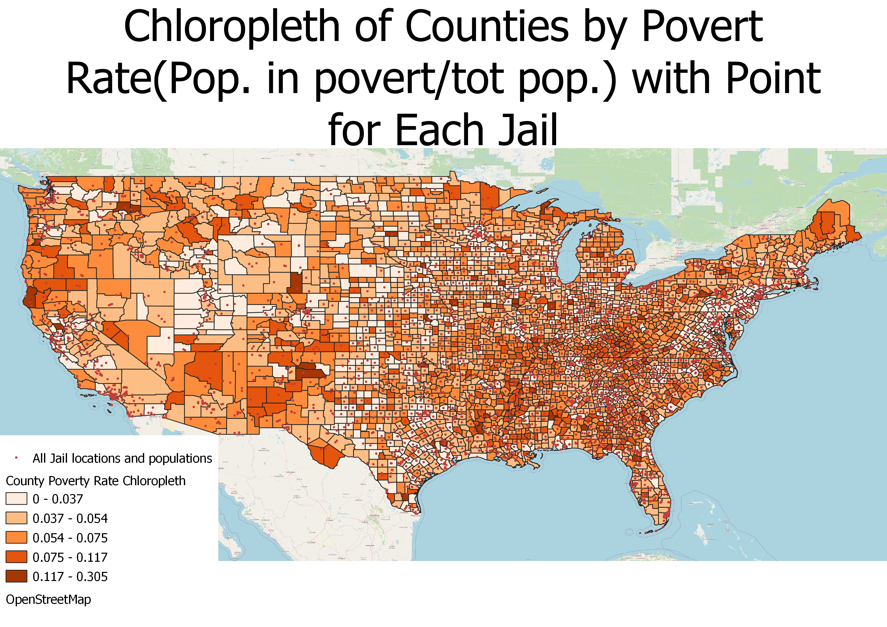
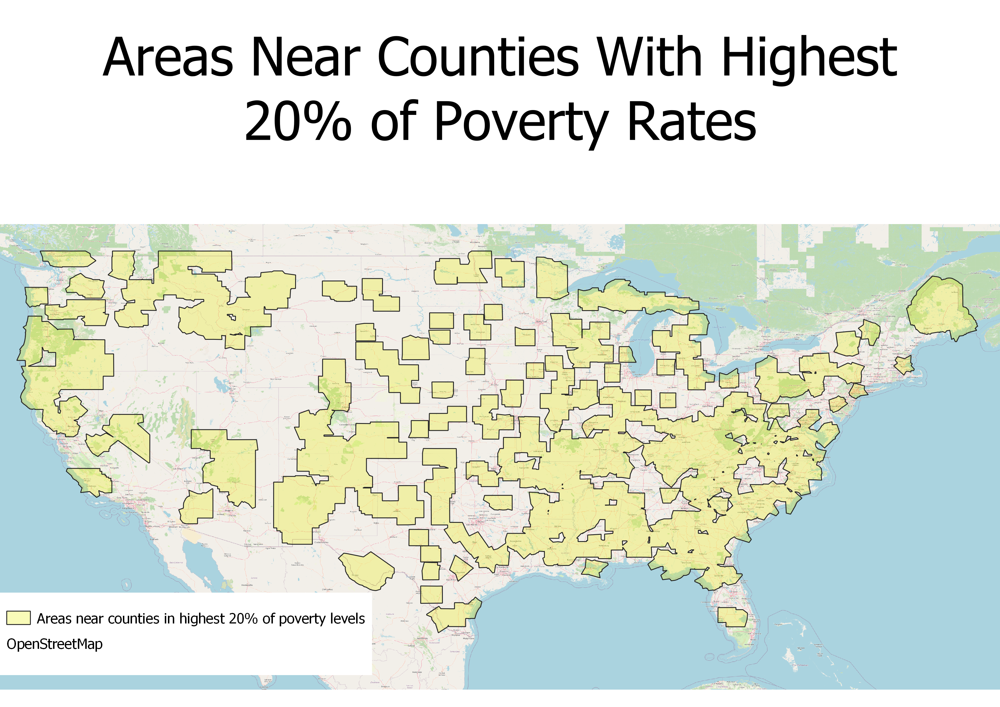
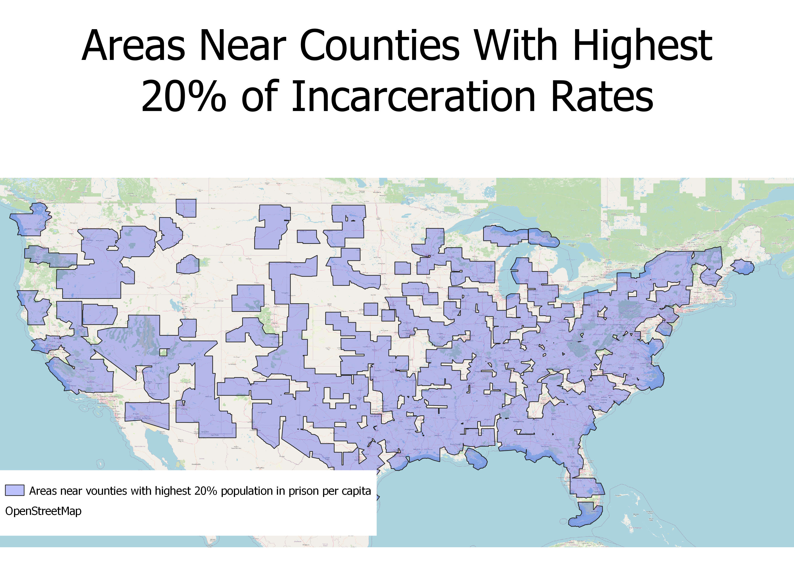
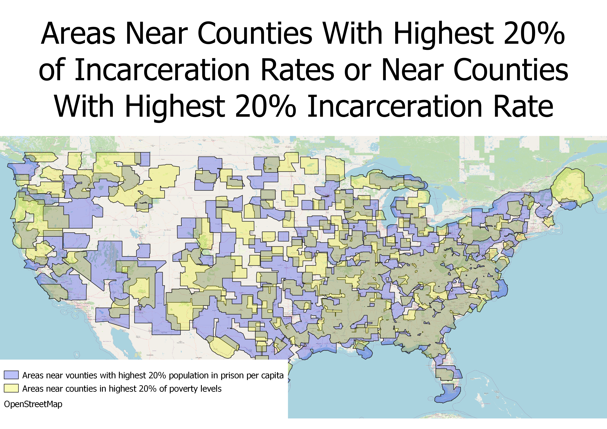
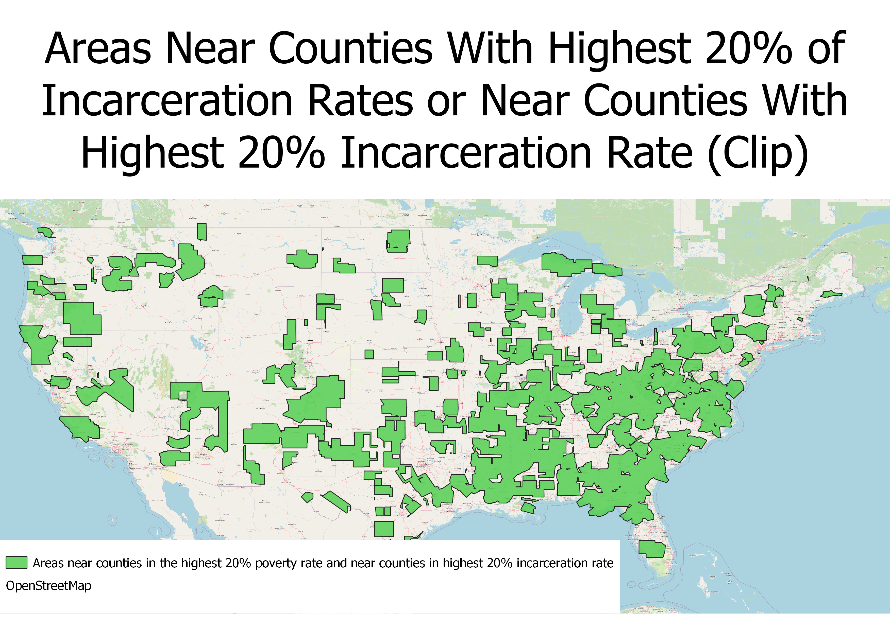

Homework 8: Geoprocessing Analysis
Caleb Tyler
I wanted to investigate the geographic connection between areas of high poverty rates and areas of high incarceration rates. To do this I used the geoprocessing analysis methods of select by attribute, buffer, point-in-polygon overlay, and clip.
First I created a chloropleth of the poverty rates by county in the US, then I put a dot density of prison locations on top of this. The population of each prison in this point layer is what I used to determine the population incarcerated in each county.

Then, I used the select by attribute method to find all counties with poverty rates in the top 20%. I added a buffer of 0.3 degrees to include nearby areas.

Next, I used points-in-polygon overlap method to count the number of each prisons per county(using the point file from the previous map and a county geojson file). By select the option to make the weight of each point its prison population, the total population of incarcerated people in the county was found. This population of incarcerated people was divided by the total population of the county to find the rate of incarceration in the county(people incarcerated in county/county population). Select by attribute was used to take the counties with the highest 20% rates of incarceration. The buffer method was used to expand this polygon by 0.3 degrees to include nearby areas in analysis.

I was interested in the area that was both near a county in the top 20% incarceration rates, and near counties in the top 20% poverty rates. I believe a high amount of overlap between these two areas is a indicator poverty and incarceration rates are related. This is an overlap of the two previous maps.

Finally using the clip method, we can see the areas that are both near the highest 20% of incarceration rates in counties and the hihghest 20% of poverty rates in counties.

Web Map of Results
Web Map
Links to data sources
original poverty census data
prison point file data source
county geojson file data source
county incarceration population counts geojson
top 20% poverty rates geojson
top 20% incarceration rates geojson
final clipped geojson